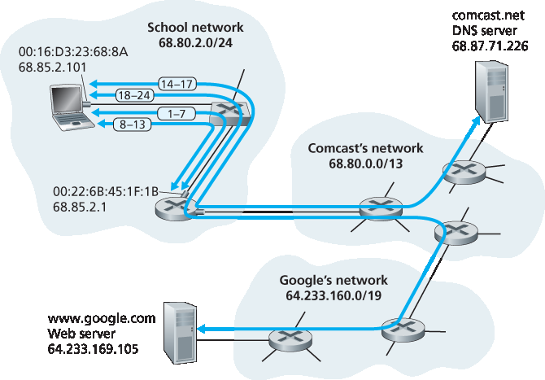

6.7 回顾：网页请求生命周期中的一天#
6.7 Retrospective: A Day in the Life of a Web Page Request
Now that we’ve covered the link layer in this chapter, and the network, transport and application layers in earlier chapters, our journey down the protocol stack is complete! In the very beginning of this book (Section 1.1), we wrote “much of this book is concerned with computer network protocols,” and in the first five chapters, we’ve certainly seen that this is indeed the case! Before heading into the topical chapters in second part of this book, we’d like to wrap up our journey down the protocol stack by taking an integrated, holistic view of the protocols we’ve learned about so far. One way then to take this “big picture” view is to identify the many (many!) protocols that are involved in satisfying even the simplest request: downloading a Web page. Figure 6.32 illustrates our setting: a student, Bob, connects a laptop to his school’s Ethernet switch and downloads a Web page (say the home page of www.google.com). As we now know, there’s a lot going on “under the hood” to satisfy this seemingly simple request. A Wireshark lab at the end of this chapter examines trace files containing a number of the packets involved in similar scenarios in more detail.
6.7.1 入门: DHCP、UDP、IP 和以太网#
6.7.1 Getting Started: DHCP, UDP, IP, and Ethernet
Let’s suppose that Bob boots up his laptop and then connects it to an Ethernet cable connected to the school’s Ethernet switch, which in turn is connected to the school’s router, as shown in Figure 6.32. The school’s router is connected to an ISP, in this example, comcast.net. In this example, comcast.net is providing the DNS service for the school; thus, the DNS server resides in the Comcast network rather than the school network. We’ll assume that the DHCP server is running within the router, as is often the case.

Figure 6.32 A day in the life of a Web page request: Network setting and actions
When Bob first connects his laptop to the network, he can’t do anything (e.g., download a Web page) without an IP address. Thus, the first network-related action taken by Bob’s laptop is to run the DHCP protocol to obtain an IP address, as well as other information, from the local DHCP server:
The operating system on Bob’s laptop creates a DHCP request message (Section 4.3.3) and puts this message within a UDP segment (Section 3.3) with destination port 67 (DHCP server) and source port 68 (DHCP client). The UDP segment is then placed within an IP datagram (Section 4.3.1) with a broadcast IP destination address (255.255.255.255) and a source IP address of 0.0.0.0, since Bob’s laptop doesn’t yet have an IP address.
The IP datagram containing the DHCP request message is then placed within an Ethernet frame (Section 6.4.2). The Ethernet frame has a destination MAC addresses of FF:FF:FF:FF:FF:FF so that the frame will be broadcast to all devices connected to the switch (hopefully including a DHCP server); the frame’s source MAC address is that of Bob’s laptop, 00:16:D3:23:68:8A.
The broadcast Ethernet frame containing the DHCP request is the first frame sent by Bob’s laptop to the Ethernet switch. The switch broadcasts the incoming frame on all outgoing ports, including the port connected to the router.
The router receives the broadcast Ethernet frame containing the DHCP request on its interface with MAC address 00:22:6B:45:1F:1B and the IP datagram is extracted from the Ethernet frame. The datagram’s broadcast IP destination address indicates that this IP datagram should be processed by upper layer protocols at this node, so the datagram’s payload (a UDP segment) is thus demultiplexed (Section 3.2) up to UDP, and the DHCP request message is extracted from the UDP segment. The DHCP server now has the DHCP request message.
5. Let’s suppose that the DHCP server running within the router can allocate IP addresses in the CIDR (Section 4.3.3) block 68.85.2.0/24. In this example, all IP addresses used within the school are thus within Comcast’s address block. Let’s suppose the DHCP server allocates address 68.85.2.101 to Bob’s laptop. The DHCP server creates a DHCP ACK message (Section 4.3.3) containing this IP address, as well as the IP address of the DNS server (68.87.71.226), the IP address for the default gateway router (68.85.2.1), and the subnet block (68.85.2.0/24) (equivalently, the “network mask”). The DHCP message is put inside a UDP segment, which is put inside an IP datagram, which is put inside an Ethernet frame. The Ethernet frame has a source MAC address of the router’s interface to the home network (00:22:6B:45:1F:1B) and a destination MAC address of Bob’s laptop (00:16:D3:23:68:8A). 6. The Ethernet frame containing the DHCP ACK is sent (unicast) by the router to the switch. Because the switch is self-learning (Section 6.4.3) and previously received an Ethernet frame (containing the DHCP request) from Bob’s laptop, the switch knows to forward a frame addressed to 00:16:D3:23:68:8A only to the output port leading to Bob’s laptop. 7. Bob’s laptop receives the Ethernet frame containing the DHCP ACK, extracts the IP datagram from the Ethernet frame, extracts the UDP segment from the IP datagram, and extracts the DHCP ACK message from the UDP segment. Bob’s DHCP client then records its IP address and the IP address of its DNS server. It also installs the address of the default gateway into its IP forwarding table (Section 4.1). Bob’s laptop will send all datagrams with destination address outside of its subnet 68.85.2.0/24 to the default gateway. At this point, Bob’s laptop has initialized its networking components and is ready to begin processing the Web page fetch. (Note that only the last two DHCP steps of the four presented in Chapter 4 are actually necessary.)
6.7.2 仍在使用入门: DNS 和 ARP#
6.7.2 Still Getting Started: DNS and ARP
When Bob types the URL for www.google.com into his Web browser, he begins the long chain of events that will eventually result in Google’s home page being displayed by his Web browser. Bob’s Web browser begins the process by creating a TCP socket (Section 2.7) that will be used to send the HTTP request (Section 2.2) to www.google.com. In order to create the socket, Bob’s laptop will need to know the IP address of www.google.com. We learned in Section 2.5, that the DNS protocol is used to provide this name-to-IP-address translation service.
The operating system on Bob’s laptop thus creates a DNS query message (Section 2.5.3), putting the string “www.google.com” in the question section of the DNS message. This DNS message is then placed within a UDP segment with a destination port of 53 (DNS server). The UDP segment is then placed within an IP datagram with an IP destination address of 68.87.71.226 (the address of the DNS server returned in the DHCP ACK in step 5) and a source IP address of 68.85.2.101.
Bob’s laptop then places the datagram containing the DNS query message in an Ethernet frame. This frame will be sent (addressed, at the link layer) to the gateway router in Bob’s school’s network. However, even though Bob’s laptop knows the IP address of the school’s gateway router (68.85.2.1) via the DHCP ACK message in step 5 above, it doesn’t know the gateway router’s MAC address. In order to obtain the MAC address of the gateway router, Bob’s laptop will need to use the ARP protocol (Section 6.4.1).
10. Bob’s laptop creates an ARP query message with a target IP address of 68.85.2.1 (the default gateway), places the ARP message within an Ethernet frame with a broadcast destination address (FF:FF:FF:FF:FF:FF) and sends the Ethernet frame to the switch, which delivers the frame to all connected devices, including the gateway router. 11. The gateway router receives the frame containing the ARP query message on the interface to the school network, and finds that the target IP address of 68.85.2.1 in the ARP message matches the IP address of its interface. The gateway router thus prepares an ARP reply, indicating that its MAC address of 00:22:6B:45:1F:1B corresponds to IP address 68.85.2.1. It places the ARP reply message in an Ethernet frame, with a destination address of 00:16:D3:23:68:8A (Bob’s laptop) and sends the frame to the switch, which delivers the frame to Bob’s laptop. 12. Bob’s laptop receives the frame containing the ARP reply message and extracts the MAC address of the gateway router (00:22:6B:45:1F:1B) from the ARP reply message. 13. Bob’s laptop can now (finally!) address the Ethernet frame containing the DNS query to the gateway router’s MAC address. Note that the IP datagram in this frame has an IP destination address of 68.87.71.226 (the DNS server), while the frame has a destination address of 00:22:6B:45:1F:1B (the gateway router). Bob’s laptop sends this frame to the switch, which delivers the frame to the gateway router.
6.7.3 仍在使用入门：到 DNS 服务器的域内路由#
6.7.3 Still Getting Started: Intra-Domain Routing to the DNS Server
The gateway router receives the frame and extracts the IP datagram containing the DNS query. The router looks up the destination address of this datagram (68.87.71.226) and determines from its forwarding table that the datagram should be sent to the leftmost router in the Comcast network in Figure 6.32. The IP datagram is placed inside a link-layer frame appropriate for the link connecting the school’s router to the leftmost Comcast router and the frame is sent over this link.
The leftmost router in the Comcast network receives the frame, extracts the IP datagram, examines the datagram’s destination address (68.87.71.226) and determines the outgoing interface on which to forward the datagram toward the DNS server from its forwarding table, which has been filled in by Comcast’s intra-domain protocol (such as RIP, OSPF or IS-IS, Section 5.3) as well as the Internet’s inter-domain protocol, BGP (Section 5.4).
Eventually the IP datagram containing the DNS query arrives at the DNS server. The DNS server extracts the DNS query message, looks up the name www.google.com in its DNS database (Section 2.5), and finds the DNS resource record that contains the IP address (64.233.169.105) for www.google.com. (assuming that it is currently cached in the DNS server). Recall that this cached data originated in the authoritative DNS server (Section 2.5.2) for googlecom. The DNS server forms a DNS reply message containing this hostname-to-IP- address mapping, and places the DNS reply message in a UDP segment, and the segment within an IP datagram addressed to Bob’s laptop (68.85.2.101). This datagram will be forwarded back through the Comcast network to the school’s router and from there, via the Ethernet switch to Bob’s laptop.
Bob’s laptop extracts the IP address of the server www.google.com from the DNS message. Finally, after a lot of work, Bob’s laptop is now ready to contact the www.google.com server!
6.7.4 Web 客户端-服务器交互: TCP 和 HTTP#
6.7.4 Web Client-Server Interaction: TCP and HTTP
Now that Bob’s laptop has the IP address of www.google.com, it can create the TCP socket (Section 2.7) that will be used to send the HTTP GET message (Section 2.2.3) to www.google.com. When Bob creates the TCP socket, the TCP in Bob’s laptop must first perform a three-way handshake (Section 3.5.6) with the TCP in www.google.com. Bob’s laptop thus first creates a TCP SYN segment with destination port 80 (for HTTP), places the TCP segment inside an IP datagram with a destination IP address of 64.233.169.105 (www.google.com), places the datagram inside a frame with a destination MAC address of 00:22:6B:45:1F:1B (the gateway router) and sends the frame to the switch.
The routers in the school network, Comcast’s network, and Google’s network forward the datagram containing the TCP SYN toward www.google.com, using the forwarding table in each router, as in steps 14–16 above. Recall that the router forwarding table entries governing forwarding of packets over the inter-domain link between the Comcast and Google networks are determined by the BGP protocol (Chapter 5).
Eventually, the datagram containing the TCP SYN arrives at www.google.com. The TCP SYN message is extracted from the datagram and demultiplexed to the welcome socket associated with port 80. A connection socket (Section 2.7) is created for the TCP connection between the Google HTTP server and Bob’s laptop. A TCP SYNACK (Section 3.5.6) segment is generated, placed inside a datagram addressed to Bob’s laptop, and finally placed inside a link-layer frame appropriate for the link connecting www.google.com to its first-hop router.
The datagram containing the TCP SYNACK segment is forwarded through the Google, Comcast, and school networks, eventually arriving at the Ethernet card in Bob’s laptop. The datagram is demultiplexed within the operating system to the TCP socket created in step 18, which enters the connected state.
With the socket on Bob’s laptop now (finally!) ready to send bytes to www.google.com, Bob’s browser creates the HTTP GET message (Section 2.2.3) containing the URL to be fetched. The HTTP GET message is then written into the socket, with the GET message becoming the payload of a TCP segment. The TCP segment is placed in a datagram and sent and delivered to www.google.com as in steps 18–20 above.
The HTTP server at www.google.com reads the HTTP GET message from the TCP socket, creates an HTTP response message (Section 2.2), places the requested Web page content in the body of the HTTP response message, and sends the message into the TCP socket.
The datagram containing the HTTP reply message is forwarded through the Google, Comcast, and school networks, and arrives at Bob’s laptop. Bob’s Web browser program reads the HTTP response from the socket, extracts the html for the Web page from the body of the HTTP response, and finally (finally!) displays the Web page!
Our scenario above has covered a lot of networking ground! If you’ve understood most or all of the above example, then you’ve also covered a lot of ground since you first read Section 1.1, where we wrote “much of this book is concerned with computer network protocols” and you may have wondered what a protocol actually was! As detailed as the above example might seem, we’ve omitted a number of possible additional protocols (e.g., NAT running in the school’s gateway router, wireless access to the school’s network, security protocols for accessing the school network or encrypting segments or datagrams, network management protocols), and considerations (Web caching, the DNS hierarchy) that one would encounter in the public Internet. We’ll cover a number of these topics and more in the second part of this book.
Lastly, we note that our example above was an integrated and holistic, but also very “nuts and bolts,” view of many of the protocols that we’ve studied in the first part of this book. The example focused more on the “how” than the “why.” For a broader, more reflective view on the design of network protocols in general, see [Clark 1988, RFC 5218].